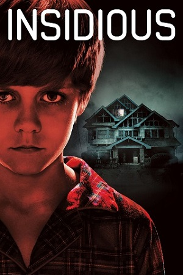

1/2

2/2

A hobby is a regular activity that can be done for pleasure, usually in one's spare time. My hobbies are listen to music, watch movies and reading books. I love to watch English and Malay and what I love the most are horror, fantasy and mystery genre because their graphic is so real and stories are great compared to other movies. Example, Insidious series movies. For reading, I like to read all types of genre. Other than that, I like to listen to English music because I understand and prefer the song and the lyrics more.